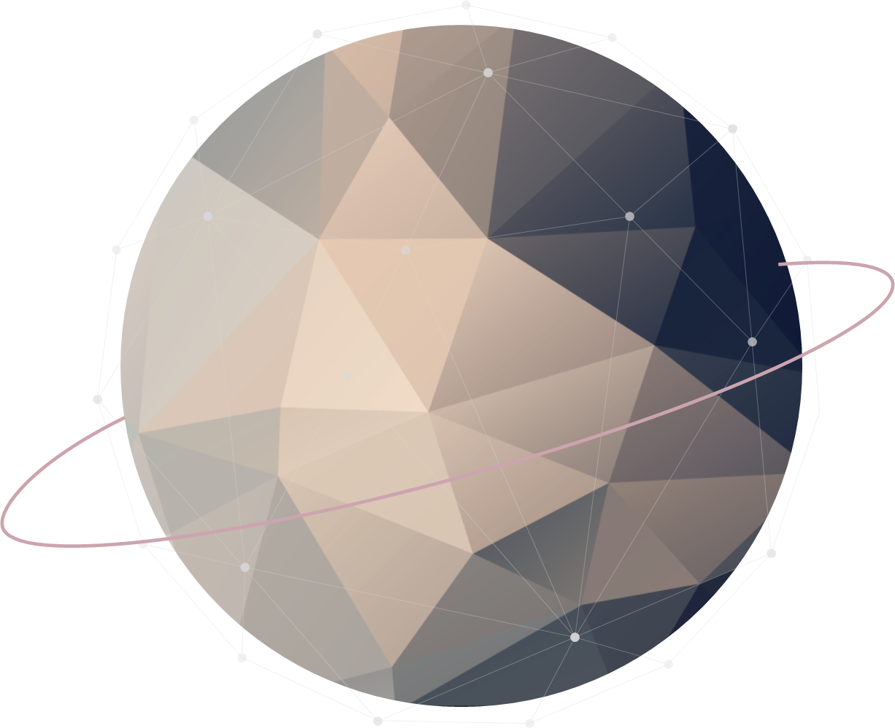
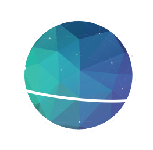
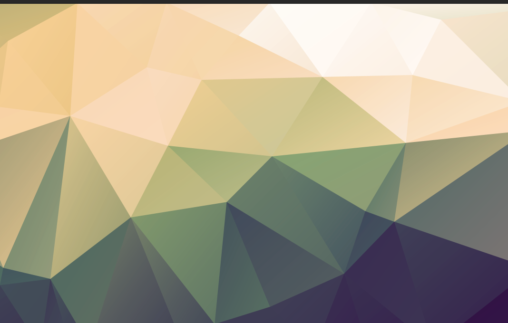
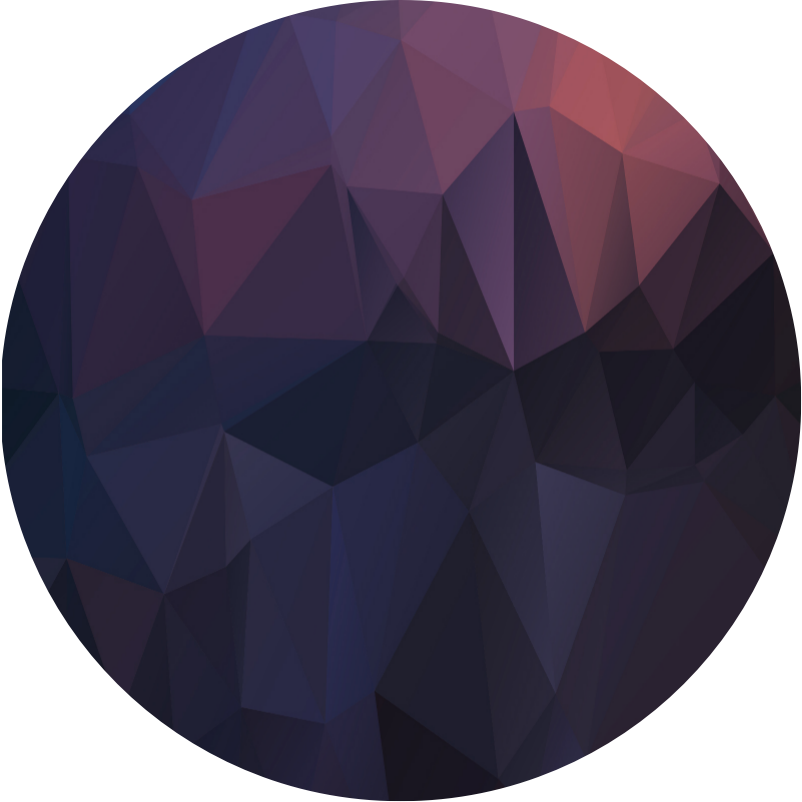
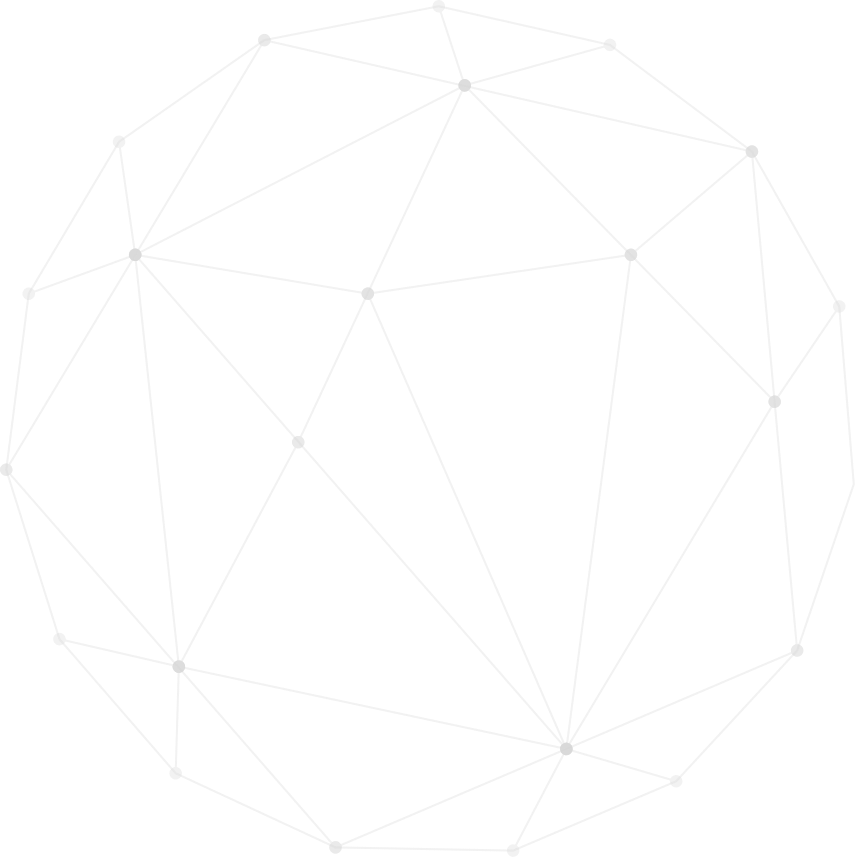
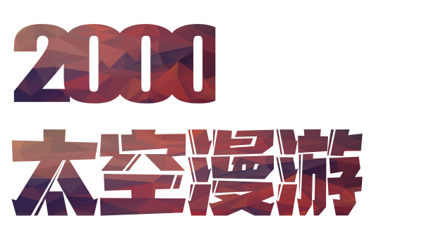
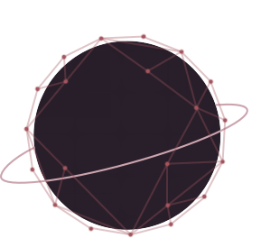
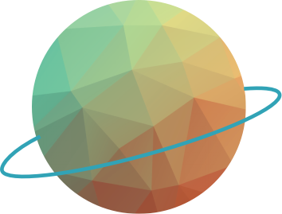
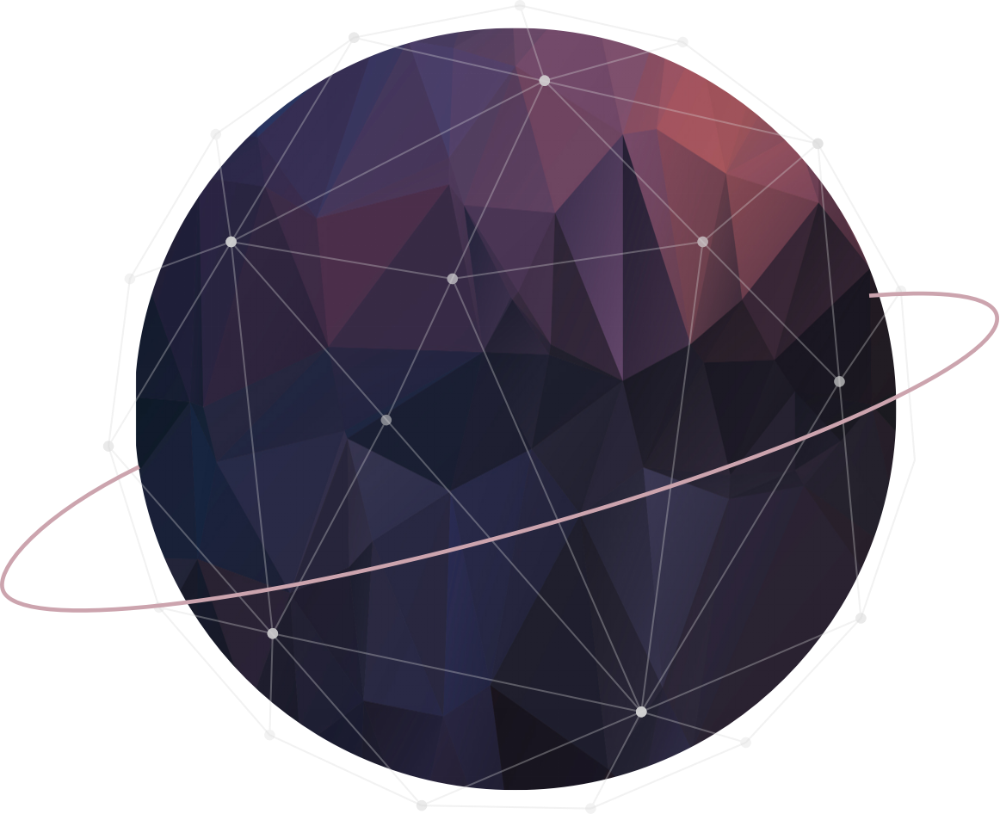
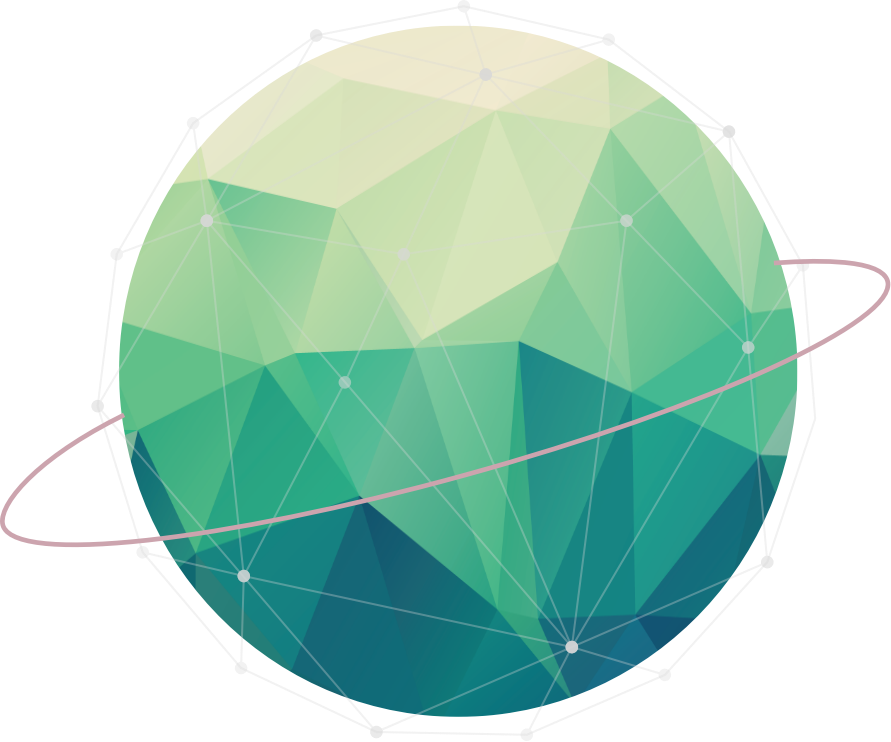

星图导览
星图导览
 燃料库
燃料库

宇航员档案 航行日志
已探索星球 建立通讯
Do not go gentle into that good night



这里是黎康珏
信号良好，欢迎靠近
星图导览
燃料库

宇航员档案 航行日志
已探索星球 建立通讯
Do not go gentle into that good night
Web 前端开发工程师

02
专业技能
熟练使用，能独立完成网页静态布局与基础交互功能
熟悉基础语法，理解原型链、闭包、事件循环；熟悉 ES6+
熟悉 Vue3 / Vue Router / Vuex，理解生命周期与组件通信
熟悉 axios 前后端交互，了解跨域问题及 HTTP/TCP 协议
了解协作开发、分支管理、版本管理
了解现代前端构建工具链

派工智慧地图

全球急难救援平台
针对全球范围内极端环境下的救援调度与响应，从零搭建的前端工程底座。
Do not go gentle into that good night,
Old age should burn and rave at close of day;
Rage, rage against the dying of the light.
 摄影
摄影
 旅游
旅游
荣誉与成就
程序与算法设计大赛
第二名 2021.10学业表现优异
三等奖学金德智体全面发展
优秀学生干部大学英语等级考试
CET-6西南大学体育活动
获奖本科生军训工作
优秀学员